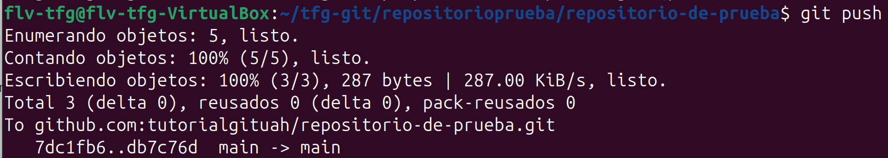
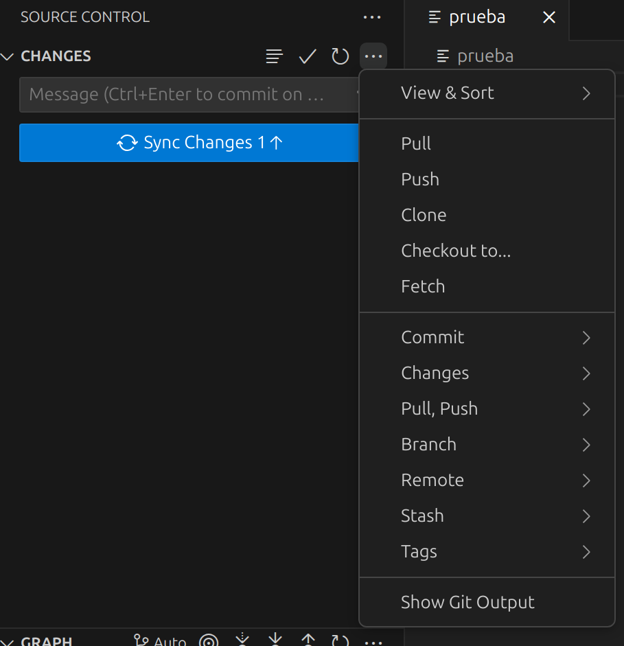

git pushSe utiliza para enviar los commits de tu repositorio local a un repositorio remoto. Con este comando sincronizas los cambios que has hecho en tu rama local con la rama correspondiente en el repositorio remoto.

Dentro de la carpeta la cual queramos inicializar ejecutamos lo siguiente:
git push

En la ventana de control de git dentro de vscode, tenemos dos opciones, darle a "Sync Changes" o acceder al menú extendido dandole a los 3 puntos horizontales y darle a push, obtendremos el mismo resultado.